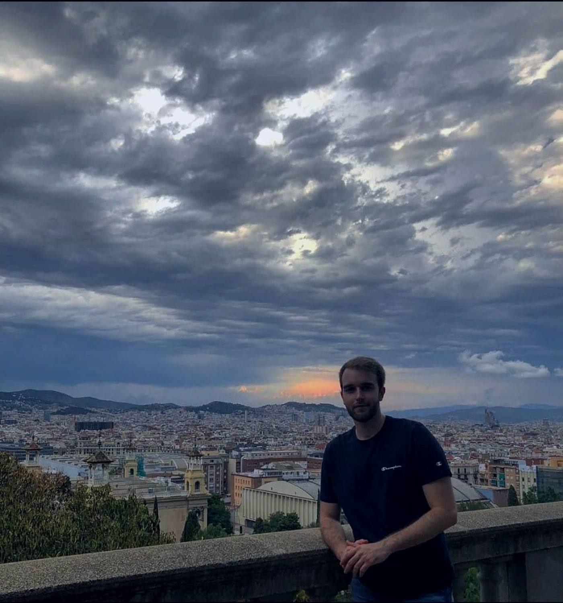
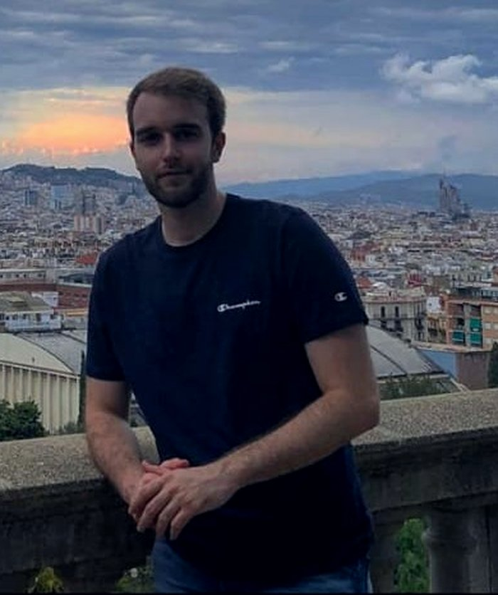

PhD candidate in computational chemistry, using quantum mechanics and molecular simulation to understand how enzymes and catalysts work, picking up Python along the way to make sense of the results.
Computational chemist finishing a PhD, making the jump to an industry R&D role. I use quantum chemistry and molecular simulation (QM/MM, DFT, molecular dynamics, metadynamics) to explain how enzymes and catalysts work and connect a molecule's structure to what it actually does, then use Python to turn that into results other people can use.
That combination, mechanistic insight plus the code to test it, is what I want to bring to an industry R&D team next. Along the way I keep building small tools that speed up everyday work, a few of which are below.

Personal Python side-projects that grew out of my own research: small in scope, but documented well enough that someone else could actually run them.
Turns a photo, a ChemDraw sketch, or a typed structure of a molecule into a ready-to-run input file for quantum chemistry software like Gaussian or ORCA, skipping a fiddly manual setup step every computational chemist knows well.
Combines an image-recognition model with a verification step for the one part the pipeline can't be fully sure about, like stereochemistry.
Measures how much two atoms overlap in 3D to classify chemical interactions, from hydrogen bonds to metal contacts, across a structure or an entire simulation. Implements a bonding descriptor I co-developed and published in Dalton Transactions (2026).
A single distance stands in for slower, more expensive methods, making it practical to screen bonding across many structures at once.
Trains a small graph neural network to predict interaction energies between molecules, to test whether the Penetration Index (from PenIndex, above) helps it learn better than raw atomic distances alone.
Trained on 1,170 DFT reference energies across five interaction types; the physics-informed feature wins clearly, even on interaction types the model never saw during training.
Automatically analyzes enzyme–substrate simulations: distances, hydrogen bonds and stability, producing ready-to-use figures and reports instead of one-off manual scripts.
Built so a colleague, not just its author, can pick it up and run it.
A small utility for pulling specific frames or ranges out of molecular dynamics simulations, replicating a common AMBER workflow so labmates can grab exactly the snapshot they need.
Analyzes and visualizes the 3D shape of sugar rings in molecules or simulations, tracking how that shape changes over time or under different conditions.
Reads structures and simulation trajectories directly and produces the specialized plots this kind of analysis normally requires by hand.
In the J. Mol. Struct. paper above, we computed how a small HOMO–LUMO gap and high hyperpolarizability in an organic salt translate into a strong third-order nonlinear optical response; the same kind of electronic-structure→function link that shows up in catalyst design and drug-target binding.
Open to industry roles in computational chemistry and molecular modelling, with a growing interest in applied ML, quantum computing and corporate R&D. If any of the above is a fit, I'd like to hear from you.